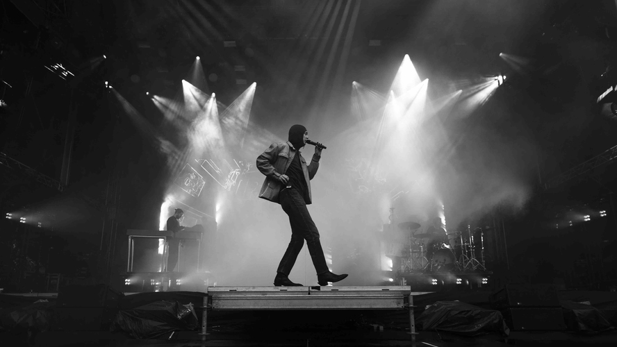
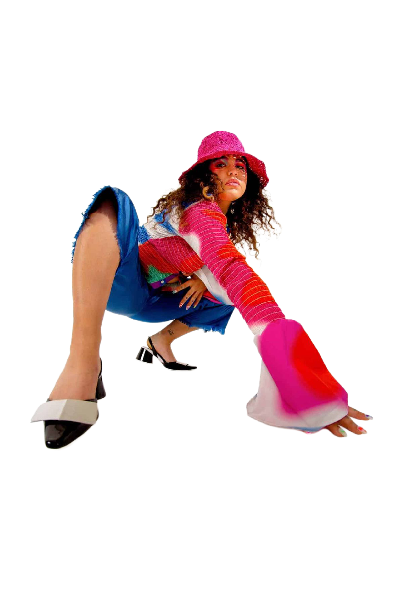

01 artist fileCezinando
Norwegian rap that scans more like art-pop. Cezinando writes long, shifting songs with horn-section detours and lyrics built like short stories. Plays loud, hits soft.
recommended track · "Sannheten"international artist
new noiselisten firstnorsk
02
track notes
MK.gee
Mike Gordon recording in a fog. Reverb, blur, half-spoken hooks, and guitar tones that feel like they were dragged through a tape machine. Two Star & The Dream Police sounds like a record made alone at four in the morning.
recommended track · "Are You Looking Up"
field recordingtaperecommended

03 featureRemi Wolf
Color-saturated funk-pop with a horn section, a yelp, and a sense of humor. Songs that feel like the kind of party you only get invited to once. Built loud, mixed loud, played louder.
recommended track · "Photo ID"listen at volume.